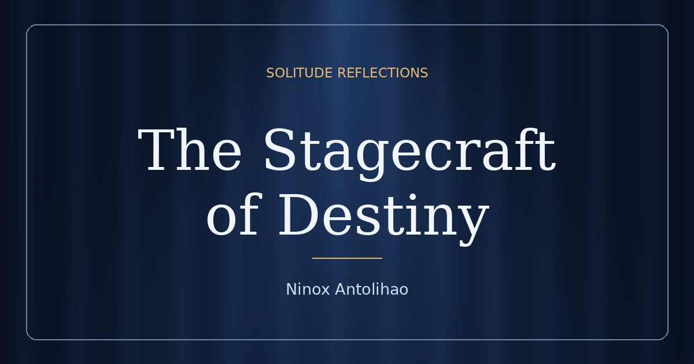

The Stagecraft of Destiny
On ancient scripts, human obsession, and the quiet machinery behind fulfilled predictions.

Listen to the reflection
Synthesized narration
Download MP3Human beings have never been comfortable standing in an unscripted universe. Randomness offers no plot, no moral symmetry, and no promise that our suffering belongs to a larger design. Confronted with the quiet indifference of chance, we reach for ancient texts and inherited warnings—not because we want certainty about the future, but because a predetermined script, even a catastrophic one, feels safer than realizing nobody is steering the wheel.
We treat old predictions as though they were locked clocks ticking toward an unavoidable hour. When unrest spreads, when borders shift, or when institutions fracture, we squint at the chaos of the present and stretch vague, poetic metaphors until they wrap around modern headlines. Every generation convinces itself it is living in the final chapter, mistaking the timeless turbulence of human nature for proof that an ancient oracle saw us coming.
Prophecies aren't coming true—and the real revelation is that people are just fulfilling the prophecies to prove them right.
Look closely at how a prediction actually enters reality, and the illusion dissolves. A prophecy does not descend from the sky to bend human hands; human hands bend reality until it resembles the page. Once an idea is declared sacred destiny, believers, leaders, and institutions stop acting as passive observers and quietly become stagehands. Policies are drafted to match the blueprint, alliances are forged to mirror old rivalries, and conflicts are welcomed rather than prevented—all so the scene unfolds on cue.
There is a subtle vanity hidden inside this obedience. To believe you are witnessing—or accelerating—a foretold era flatters the ego. It transforms ordinary political ambition, fear, or tribal loyalty into cosmic participation. Instead of taking responsibility for the world we are actively constructing, we point at an ancient text and call our own choices inevitable.
True awakening begins the moment we stop confusing stagecraft with fate. The future is not waiting inside an old scroll to happen to us; it is being built in broad daylight by the very people claiming they had no choice.